Okay,lah!
 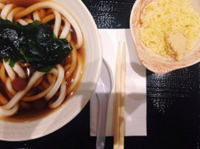
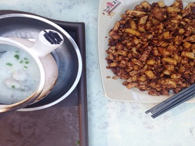
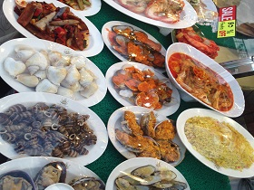
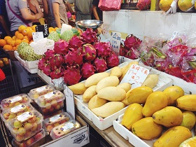
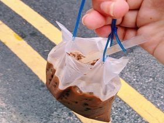
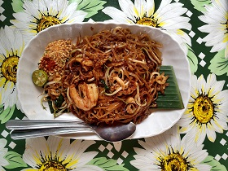
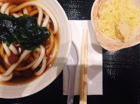
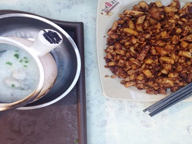
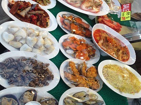
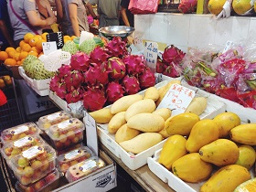
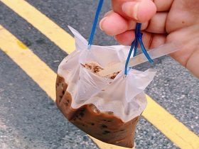
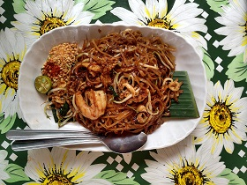
Being lucky to have no food allergies, who wouldn`t want to take the opportunity and go on a gastronomic tour around Singapore. So I gave a vow of Jamie Oliver to eat solely local food during my 6 months here. Singapore is a paradise for lovers of good food! "Eat well" is a pretty broad term, but for Singaporeans first of all, it means eat a lot. Portions here are huge and will definitely not fit in our European palm.
In Soup We Trust
My workout for stretching the stomach started with Udon soup. Japanese cuisine could be found everywhere, almost every shopping mall offers tons of Japanese dishes besides well- known sushi. In a bowl of a size of a bowling ball is soy broth with long white worms from wheat noodles…Well, that is it! The add-ons are for extra $2. For your soup, you can add chopped tempera "a la soup with croutons", green onions, garlic paste, ginger and hot pickles. Done with Udon and it deserved "C".
Bubble Tea
An hour after our hearty dinner we head to a bubble tea booth. Sweet drink from Malaysia is served cold or hot with tea, milk or other sweet drinks.Tastes are countless with jelly beans everywhere. Without hesitation, I order the same drink, Gongcha, as my colleague. This is tea with milk foam, which is better to be stirred at the end. As it turned out, it's actually pretty entertaining to catch those gelatin beans with a straw.
Breakfast
Breakfast is my favorite time of the day, because,
- I am a morning person
- you can treat yourself with carbs until 12 am :)
and
Hawker centres offer completely different dishes from 6 am: rice, meat, or fried dough. One of the traditional dishes for breakfast is toast with coconut jam and butter. Two toasts are served with almost raw eggs to which you add black pepper, soy sauce, and then stir and drink. Singaporeans prefer to drink coffee with condensed milk and sugar but this "coffee" is a completely different story.